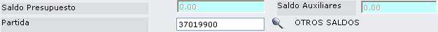

Reformas
Reformas Presupuestarias.- Las reformas al presupuesto se definen como variaciones en las asignaciones presupuestarias tanto de ingresos como de gastos contenidos en los presupuestos aprobados. Las principales reformas presupuestarias son las siguientes:
- Aumentos de Créditos, cuando se incrementa el Presupuesto Institucional
- Rebajas de Créditos, cuando se disminuye el Presupuesto Institucional
- Traspaso de Créditos, tienen lugar cuando se hacen reasignaciones entre partidas presupuestarias.
Son necesarias cuando:
- Se requiere incrementar o disminuir el Presupuesto Institucional.
- Faltan recursos en alguna partida presupuestaria.
- Existe error en los códigos o en las denominaciones de las partidas presupuestarias.
Se efectivizan a través de:
- Resoluciones Presupuestarias, se sustentan siempre en informes justificativos de la conveniencia de la reforma presupuestaria.
Figura 4.53. Reformas.
El proceso para el registro de una reforma presupuestaria es el siguiente:
- Se define si se trata de un ingreso o gasto y se digita el número de reforma.
- Se escoge la compañía en la que se va a registrar la reforma presupuestaria.
- Se registra el comprobante. (Un comprobante puede tener varios movimientos y una partida puede tener varios comprobantes).
Todo este proceso se describe a continuación:
Fecha:
Despliega la fecha actual, que sería la fecha en la que se registra la reforma. Esta fecha puede ser actualizada, según sean las necesidades del usuario.
Tipo Presupuesto:
Seleccione si va a registrar movimientos de Ingreso o Egreso.
Tipo y Número de Modificación:
Despliega las iniciales de Reforma (RF), en el campo siguiente debe digitar el Número de Reforma.
BOTONES
Figura 4.54. Reformas – Ingreso del encabezado del comprobante.
La siguiente información determina el encabezado del comprobante que se va a registrar.
Compañía:
Digite el código de la compañía a la que desea aplicar las reformas presupuestarias. Si no conoce el código de compañía, de clic en el icono, el mismo que despliega la lista de compañías como se muestra en 4.55.
Figura 4.55. Reformas – Escoger Compañía.
Escoja la compañía dando clic en el vínculo Select.
Es sesión de aprobación:
Esto se define en el Módulo de Contabilidad/ Entrada de Datos/ Entrada Interactiva y permite determinar lo siguiente:
- Si se encuentra marcado el casillero ´Si´ significa que sí se van a aprobar o modificar Comprobantes existentes (No podrán introducirse nuevos Comprobantes)
- Si se encuentra marcado el casillero ´No´ significa que sí se van a introducir nuevos Comprobantes. En este caso, si el usuario está autorizado, pueden modificarse o aprobarse los Comprobantes ya existentes.
Adición de nuevos comprobantes:
Esto se define en el Módulo de Contabilidad/ Entrada de Datos/ Entrada Interactiva. Y permite determinar si se pueden añadir nuevos comprobantes al movimiento, siempre que en el campo “Es sesión de Aprobación” haya escogido la opción “No”.
Año Económico:
Despliega el año contable. Los dos últimos dígitos. Por ejemplo:
Año 2006 se despliega 06
Año 2007 se despliega 07
Periodo:
Despliega el periodo contable.
Tipo:
Despliega el código del tipo de comprobante. Este comprobante debe estar definido para entrada interactiva y encontrarse con status activo.
Número:
Asigna automáticamente un número de comprobante.
Fecha:
Despliega la fecha en la que se registra la asignación inicial.
Clase:
Clase de Comprobante. Este campo depende de la moneda que use la compañía.
- Se despliega 0, si no usa Moneda Extranjera a nivel de Plan de Cuentas.
- Se despliega 1, si se introducen todos los importes en Moneda Local.
- Se despliega 2, si se introducen todos los importes en Moneda Extranjera. Esta clase de comprobante no admite movimientos IVA.
- Se despliega 3, si se introducen todos los importes en ambas monedas. En este caso el usuario es el responsable de cuadrar el comprobante en las dos monedas.
Comentarios:
Permite digitar algún comentario sobre el comprobante.
Desde esta pantalla el usuario podrá realizar diferentes acciones, mediante los siguientes botones:
BOTÓN GRABAR COMPROBANTE
Al grabar el comprobante se despliega la pantalla que muestra 4.56.
Figura 4.56. Reformas – Ingreso de Comprobante.
Esta pantalla se ha dividido en dos secciones que corresponden a:
SECCIÓN 1:
Despliega información referente al encabezado del comprobante, como código de compañía, código del tipo de comprobante, número de comprobante, año económico, periodo contable, Fecha en la que se ingresó el comprobante y clase de comprobante. También presenta unos botones de navegación ( ) que permiten ir de un comprobante a otro.
) que permiten ir de un comprobante a otro.
SECCIÓN 2:
Esta información se despliega tomando en cuenta el estatus del comprobante y los valores de los movimientos que ingrese en la parte inferior.
Status:
Despliega el estado que tiene el comprobante que se visualiza; estos estados pueden ser los siguientes: No aprobado, Aprobado, Contabilizado y Rechazado.
Total Debe: , Total Haber:
Permite verificar que el comprobante cuadre, para esto en la pantalla inicial de Asignación Inicial, debe escoger Ingreso para cuentas del Haber y Gastos para cuentas del Debe.
Diferencia:
Despliega la diferencia que existe entre ambas cuentas, para que el comprobante cuadre debe de desplegar el valor de cero.
BOTONES


.


BOTÓN NUEVO MOVIMIENTO
Al presionar este botón se despliega la sección 2, de 4.57, en donde se ingresa el movimiento.
Figura 4.57. Reformas – Ingreso de Movimiento.
Al ingresar un movimiento se despliega:
Saldo Presupuesto:
Despliega el saldo presupuestado disponible para la compañía.
Saldo Auxiliares:
Despliega el saldo de la cuenta auxiliar que seleccione.
Partida:
Escoja la partida presupuestaria que va a registrar, presionando el icono . Al escoger la partida, se despliega los campos que debe ingresar, como se muestra en la sección 2, de 4.58.
. Al escoger la partida, se despliega los campos que debe ingresar, como se muestra en la sección 2, de 4.58.
Cuenta de Auxiliar:
Estos campos se presentan si la cuenta de mayor o Partida utiliza tipo de auxiliar. Seleccione la cuenta de auxiliar, presionando el siguiente botón , el mismo que despliega la lista de cuentas auxiliares. La cuenta auxiliar que escoja, puede tener un grupo de cuentas de auxiliar.
, el mismo que despliega la lista de cuentas auxiliares. La cuenta auxiliar que escoja, puede tener un grupo de cuentas de auxiliar.
Descripción:
Digite la descripción del movimiento.
Importe:
Digitar el importe que corresponde a la cuenta.
Tipo Movimiento:
Indica si el movimiento que está registrando pertenece al Debe o al Haber. El casillero que se encuentre marcado indica el tipo de movimiento.
Número Documento:
Despliega el número de documento que ingresó al inicio de esta opción.
Figura 4.58. Reformas – Ingreso de Movimiento.
Fecha Documento:
Despliega la fecha del documento.
Reservado Usuario: (opcional)
Se puede utilizar este campo para una clasificación adicional. Esta limitado a la función que desee proporcionarle el usuario, para una posterior identificación.
Al ingresar los datos que se pide en la sección 3, presione el botón , o presione la tecla ENTER, que despliega el mensaje “Registro Grabado”.
, o presione la tecla ENTER, que despliega el mensaje “Registro Grabado”.
BOTONES (SECCIÓN MOVIMIENTOS)
Una vez ubicado en el movimiento, de clic sobre este botón (CORREGIR INFORMACION), que permite desplegar la partida actual, como se muestra a continuación:

Si desea modificar la partida, borre el código y presione el icono, para escoger una nueva partida. Si no desea modificar la partida, presione el botón SEGUIR, o ubíquese en el código, presione la tecla ENTER y actualice la información que requiera.
- Primero es recomendable que los movimientos estén listados (con el botón LISTAR MOVIMIENTO de los botones de la parte superior)
- Una vez listado de clic en el vínculo Select del movimiento que desea eliminar.
- Al presentarse el movimiento, aparece marcado este botón; de clic sobre él y automáticamente se elimina de la lista de movimientos.
CUADRE DE COMPROBANTE
El cuadre del comprobante permite verificar que el comprobante realmente cuadra, la diferencia entre el Debe y el Haber debe ser cero.
Según vaya ingresando los movimientos, el valor del importe se agrega tanto a las cuentas del Debe como a las del Haber, esto se muestra en la sección 2, de 4.59.

Figura 4.59. Reformas – Cuadre del Comprobante.
Para cuadrar el comprobante, puede ingresar la partida de cuadre, el importe y presionar la tecla ENTER o el botón SEGUIR. El campo Reservado Usuario (esta limitado a la función que desee proporcionarle en una posterior identificación).
El importe que ingrese va a las cuentas del Debe o el Haber según corresponda (sección 2).
Como puede observarse en 4.60, sección 2, el comprobante está cuadrado y los movimientos ingresados se despliegan en la sección 3.

Figura 4.60. Reformas – Comprobante cuadrado.
Una vez que el comprobante este cuadrado, podrá Aprobarlo o Contabilizarlo.
Created with the Personal Edition of HelpNDoc: Produce electronic books easily